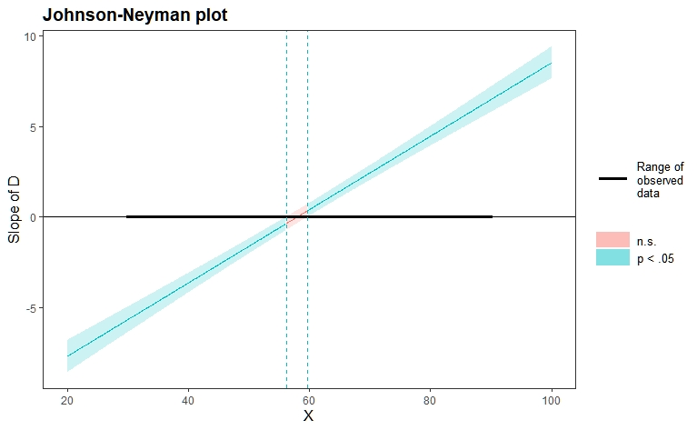

「何時、對誰」效果不同？
W 改變 X 對 Y 的斜率。將交乘項 XW 放入迴歸，檢驗交互作用，再解讀不同 W 水準下的條件效果。
Y = β₀ + β₁X + β₂W + β₃XW + ε
θ(W) = ∂E(Y)/∂X = β₁ + β₃W
θ(W) = ∂E(Y)/∂X = β₁ + β₃W
β₁ 是 W = 0 時的 X 效果。中心化讓 0 對應有意義的位置；在包含相同低階項的模型中，中心化不改變模型預測、R² 或交互作用係數，也不能保證消除共線性。
ADVANCED STATISTICS · CHAPTERS 16 & 17
一個效果如何傳遞，又在什麼條件下改變？
從交互作用、簡單斜率與 Johnson–Neyman 區間，走到間接效果與條件歷程。使用原書資料，比較四種軟體的分析方式。
原理依據：《量化研究法（二）：統計原理與分析技術》，第 16 章〈交互作用與調節效果迴歸〉、第 17 章〈中介效果迴歸與路徑分析〉。
CONCEPTS
W 改變 X 對 Y 的斜率。將交乘項 XW 放入迴歸，檢驗交互作用，再解讀不同 W 水準下的條件效果。
β₁ 是 W = 0 時的 X 效果。中心化讓 0 對應有意義的位置；在包含相同低階項的模型中，中心化不改變模型預測、R² 或交互作用係數，也不能保證消除共線性。
X 與 M 相關聯，M 再與 Y 相關聯。用兩個方程式拆解直接、間接與總效果。
加成關係適用於相同樣本、相同控制變數設定的線性加成模型。總效果未顯著，仍可能存在間接效果；勿以「總效果顯著」作為必經門檻。
MODERATION LAB
同一個交互作用模型，可以回答兩種方向的條件效果；此處明確指定 x 為焦點預測變數、w 為調節變數。
區間不含 0 區間含 0 虛線：目前 w
顯示觀察範圍內低、中、高 w 的模型預測；虛線為您選擇的 w。曲線方向的改變不等於樣本中每個人都會如此改變。
條件斜率的標準誤必須使用係數共變數，不能只把兩個標準誤相加。
先求邊界，再檢查邊界各側的信賴區間。此處使用一般 OLS 共變數及殘差自由度的 t 臨界值，未做多重比較／FDR 校正；只在實際觀察到的 w 範圍內解讀。對二元焦點 x，θ(w) 是兩組預測平均數差，不是將分組變數當作連續尺度的實質變化。
MEDIATION LAB · N = 474
以 Ch17a.sav 的員工資料檢驗「教育 x → 起薪 m → 目前薪資 y」。薪資沿用原書的萬元單位。
Sobel 檢定以常態近似處理係數乘積，適合作為教學對照。本頁主要呈現個案置回抽樣的百分位數拔靴區間；它與原書使用的偏誤校正區間不同，不能直接要求上下界完全一致。
避免只以 c′ 顯著與否貼上「完全／部分中介」標籤；請同時報告間接效果、區間、直接效果與研究設計。調查資料中的教育與薪資仍可能有共同原因。
CONDITIONAL PROCESS · MODEL 59
原書以 M 表示性別、Z 表示起薪；本頁統一改為 w 表示性別、m 表示起薪。w = 0 為女性，w = 1 為男性。
此為 PROCESS Model 59 對應的方程式。若只有 a 路徑被調節、其餘交乘係數受限為 0，才簡化為 Model 7；模型選擇應依研究假設，不能因為某個 p 值不顯著就任意替換。
FOUR ANALYSIS STRATEGIES
| 策略 | 核心做法 | 操作與比對 |
|---|---|---|
| R | lm、個案拔靴；另附 interactions 與 lavaan 延伸 | 在解壓後的教材根目錄執行 Rscript syntax/analysis.R |
| Python | statsmodels OLS、NumPy 拔靴、SciPy t 分配 | 安裝套件後執行 python syntax/analysis.py |
| SPSS ＋ PROCESS | 原生階層迴歸與重新中心化；PROCESS 1、4、59 | 設定工作目錄、修改巨集路徑，再逐段執行 analysis.sps |
| Mplus | 觀察變數路徑、DEFINE 交乘、MODEL INDIRECT／CONSTRAINT | 分別執行三個 .inp；請使用純英文目錄並以教材根目錄為工作目錄 |
以同一份轉換資料試跑，原始輸出可下載核對；Mplus 的區間與網頁的 OLS t 區間不強制相同。
DATA & REPRODUCIBILITY
| 檔案 | 網頁變數對照 | 用途 |
|---|---|---|
| ch16b.csv／40 筆 | x = 原 D；w = 原 X；y = 原 Y | 二元焦點變數的條件組間差與 J–N |
| ex16a.csv／350 筆 | x = X1；w = X2；y = Y | 連續 × 連續交互作用 |
| ex16b.csv／20 筆 | x = 原 Z；w = 原 X；y = 原 Y | 與原附圖相同方向的 J–N 分析 |
| ch16d.csv／25 筆 | x = X1；w = X2；y = Y | y = 30 − 5xw 的確定性示意，無有效的隨機誤差推論 |
| salary.csv／474 筆 | x = 原 X（教育／年）；m = 原 Z（起薪／萬元）；y = 原 Y（薪資／萬元）；w = 原 M（性別 0／1） | Ch17a.sav 的四個分析欄位；無缺失，未標準化或刪除離群值 |
Ch16 的 CSV 欄名依實際檔案讀取。Ch16d.R 原寫 math、agg、att，但提供的 Ch16d.csv 欄位是 X1、X2、INT、Y；新版改依 CSV 設定，保留原檔於原始資料包。Ch16a.R 讀取 ex16a.csv，依原有對應處理。
第 17 章 Ch17.xlsx、Ch17a.sav、Ex17a.sav、Ex17b.sav 均保留於資料包；網頁的中介與條件歷程使用 Ch17a，不把 Ex17b 的未縮放薪資混入。原 Word 章節用於整理原理，未包含在公開下載包。
網頁數值以 Python、NumPy、SciPy 計算；拔靴 5,000 次，種子 20261123，所有方程式每次使用同一組重抽個案。原始資料及書籍內容權利屬原權利人。
以下為提供的原始圖片，保留原圖標示；圖面本身未標記來源檔名與分析設定，不單憑檔名推定每張圖對應哪次分析。上方互動圖以目前所選資料重新計算。



CHECK YOUR UNDERSTANDING